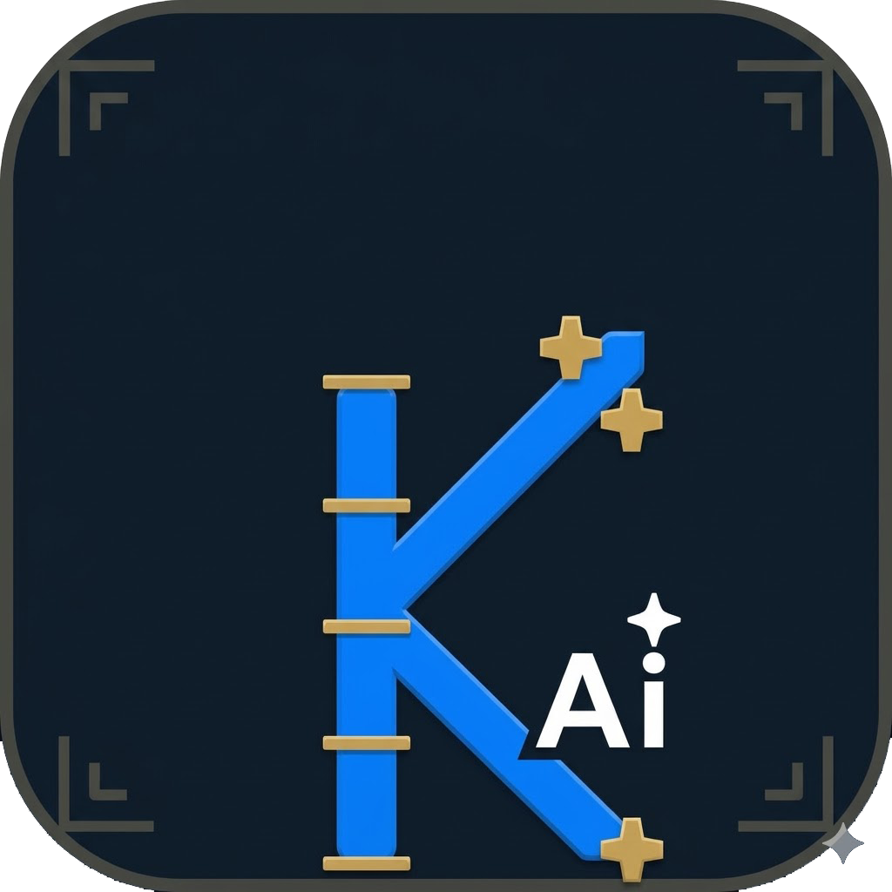
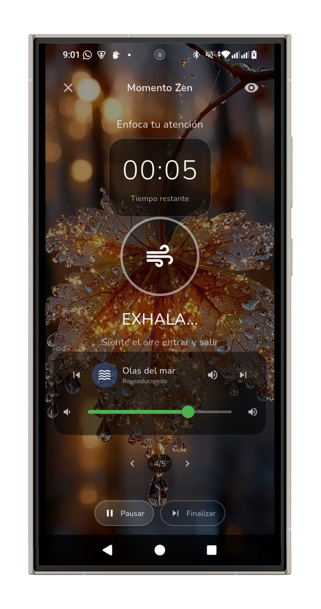
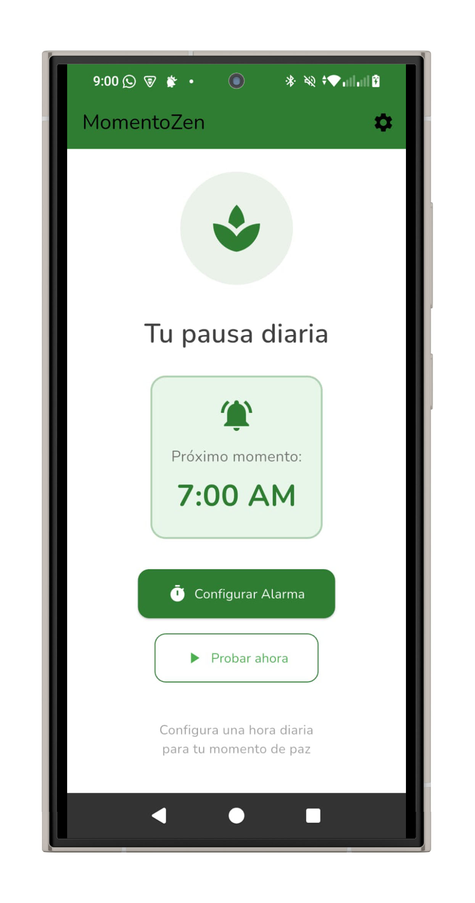
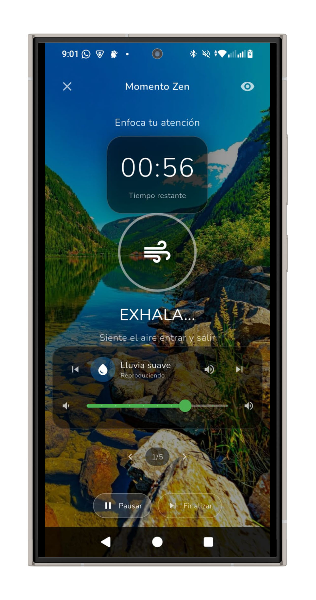
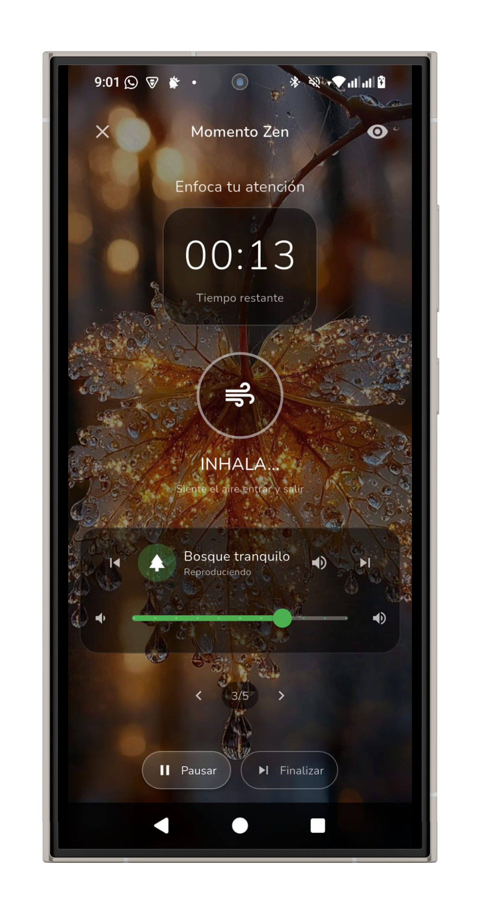

Apps
Desarrollo con IA
Herramientas con propósito, hechas desde la Patagonia
Desarrollo aplicaciones móviles que combinan inteligencia artificial, diseño cuidado y un propósito claro. Cada app nace de una necesidad real: capturar ideas de forma inteligente, o encontrar momentos de calma en la vorágine cotidiana. Publicadas en Google Play como desarrollador independiente desde El Bolsón, Patagonia.
App

KimunAI
Notas inteligentes con IA
Kimun significa conocimiento en mapuzungun, la lengua del pueblo mapuche. KimunAI es tu asistente de notas con inteligencia artificial: capturá, organizá y potenciá tus ideas con la ayuda de IA, desde una nota rápida hasta un proyecto completo.
El nombre no es casual: kimun es el saber que se transmite, se comparte, se cultiva. Una app de notas con IA que honra esa idea de conocimiento vivo.
IA con 3 niveles
Elegí entre tres tiers de inteligencia artificial según la complejidad de lo que necesites. Rápido para consultas simples, balanceado para el día a día, avanzado para análisis profundos y generación de contenido complejo.
Dictado por voz
Dictá tus notas hablando. Transcripción precisa con edición instantánea del resultado. Ideal para capturar ideas mientras caminás, cocinás o manejás.
Geolocalización
Asociá automáticamente la ubicación a tus notas para recordar dónde surgió cada idea. Porque el contexto espacial es parte del pensamiento.
Slash Commands
Escribí "/" para acceder a comandos rápidos que agilizan tu flujo de trabajo con IA: resumir, expandir, traducir, corregir, cambiar tono y más.
Editor enriquecido
Formateá tus notas con negrita, cursiva, listas, encabezados, citas y más. Todo integrado en un editor fluido que no interrumpe tu flujo de escritura.
Privacidad primero
Tus notas se almacenan localmente en tu dispositivo. No vendemos ni compartimos tu información personal. Tus datos son tuyos, siempre.
Política de Privacidad — KimunAI
Última actualización: 18 de marzo de 2026
1. Información que recopilamos
KimunAI puede recopilar la siguiente información cuando usás la aplicación:
- Contenido de notas: el texto, audio transcrito e imágenes que creás se almacenan localmente en tu dispositivo.
- Datos de ubicación: si habilitás la geolocalización, se registra la ubicación aproximada al crear una nota. Este dato se guarda solo en tu dispositivo.
- Datos de uso: podemos recopilar datos anónimos de uso (pantallas visitadas, funciones utilizadas) para mejorar la experiencia.
- Datos de voz: el audio del dictado se procesa para generar texto. No almacenamos grabaciones de voz en nuestros servidores.
2. Uso de inteligencia artificial
Cuando utilizás las funciones de IA, el texto de tu consulta se envía a proveedores de servicios de IA (como OpenAI o Anthropic) para generar respuestas. Estos proveedores procesan la consulta según sus propias políticas de privacidad. No enviamos datos personales identificables junto con las consultas de IA.
3. Almacenamiento de datos
Tus notas y datos personales se almacenan principalmente de forma local en tu dispositivo. Si utilizás funciones de respaldo o sincronización, los datos se almacenan de forma cifrada en servicios seguros en la nube.
4. Compartir información
No vendemos, intercambiamos ni transferimos tu información personal a terceros, excepto cuando sea necesario para:
- Proveer los servicios de IA descritos anteriormente.
- Cumplir con requisitos legales o regulatorios.
- Proteger nuestros derechos o seguridad.
5. Permisos de la aplicación
- Micrófono: para la función de dictado por voz.
- Ubicación: para la función de geolocalización de notas (opcional).
- Almacenamiento: para guardar notas y archivos adjuntos en tu dispositivo.
- Internet: para las funciones de IA y actualizaciones.
6. Seguridad
Implementamos medidas de seguridad razonables para proteger tu información. Sin embargo, ningún método de transmisión o almacenamiento electrónico es 100% seguro.
7. Menores de edad
KimunAI no está dirigida a menores de 13 años. No recopilamos intencionalmente información de menores de 13 años.
8. Cambios en esta política
Podemos actualizar esta política periódicamente. Te notificaremos de cambios significativos a través de la aplicación o por otros medios apropiados.
9. Contacto
Si tenés preguntas sobre esta política de privacidad, contactanos en: germaneburgos@gmail.com
App
Momento Zen
Tu espacio de calma. Momento Zen te ayuda a crear pausas conscientes en tu rutina diaria con sonidos de naturaleza, ejercicios de respiración guiada y recordatorios suaves que te invitan a detenerte, respirar y reconectar.

En un mundo de estímulos constantes, el acto más radical es detenerse. Momento Zen es una invitación a ese gesto simple y profundo.
Sonidos de naturaleza
Lluvia, bosque, arroyo, fogata, viento, pájaros y más. Mezclá sonidos y ajustá volúmenes para crear tu ambiente perfecto de relajación y concentración.
Respiración guiada
Ejercicios visuales de respiración con patrones científicamente validados: 4-7-8 para dormir, box breathing para calmar la ansiedad, respiración profunda para centrar.
Recordatorios
Configurá recordatorios suaves a lo largo del día que te invitan a tomar una pausa consciente. Personalizá horarios, frecuencia y mensaje.
Funciona offline
No necesitás conexión a internet. Todos los sonidos, ejercicios y funcionalidades están disponibles sin conexión, en cualquier lugar.
Modo nocturno
Pantalla oscura y suave, ideal para usar antes de dormir. Los sonidos se apagan gradualmente con un temporizador configurable.
Interfaz serena
Diseño minimalista pensado para no generar más estímulos de los necesarios. Colores suaves, tipografía clara, interacciones simples.



Política de Privacidad — Momento Zen
Última actualización: 18 de marzo de 2026
1. Información que recopilamos
Momento Zen está diseñada con la privacidad como prioridad:
- Preferencias de la app: tus configuraciones de sonidos, ejercicios favoritos y horarios de recordatorios se almacenan localmente en tu dispositivo.
- Datos de uso anónimos: podemos recopilar datos anónimos y agregados para mejorar la aplicación.
2. Qué NO recopilamos
- No recopilamos datos de salud o bienestar.
- No recopilamos tu ubicación.
- No accedemos a tu micrófono, cámara ni contactos.
- No recopilamos información personal identificable.
3. Almacenamiento de datos
Todos los datos de la aplicación se almacenan localmente en tu dispositivo. No utilizamos servidores externos para almacenar datos de usuarios.
4. Compartir información
No vendemos, intercambiamos ni transferimos tu información a terceros. Los únicos datos que podrían salir de tu dispositivo son estadísticas anónimas de uso, si decidís participar en el programa de mejora.
5. Permisos de la aplicación
- Notificaciones: para los recordatorios de mindfulness (opcional).
- Audio: para reproducir los sonidos de naturaleza.
6. Publicidad
Momento Zen puede mostrar anuncios no personalizados. No compartimos datos personales con redes publicitarias.
7. Menores de edad
Momento Zen es apta para todas las edades. No recopilamos intencionalmente información personal de menores de 13 años.
8. Cambios en esta política
Podemos actualizar esta política periódicamente. Te notificaremos de cambios significativos a través de la aplicación.
9. Contacto
Si tenés preguntas sobre esta política de privacidad, contactanos en: germaneburgos@gmail.com